Utilities across the globe are facing an ongoing challenge to address the limitations of an old and aging infrastructure. This is further aggravated with the need to monitor the power quality and improve the CAIDI (Customer Average Interruption Duration Index). This has prompted utilities to explore the possibilities of introducing the Condition Based Monitoring (CBM) techniques and solutions across their assets and move from a traditional Time Based Maintenance Program.
For critical installations like hospitals the reliability and the need for a quality power supply is an imperative. To address this requirement hospitals have designed their systems with redundant power supply by providing multiple incoming power feeders and the deployment of generators. The impact of electricity on human bodies has also prompted IEC to categorize different areas of a hospital by dangerous impact of currents on human bodies. This is as depicted below:
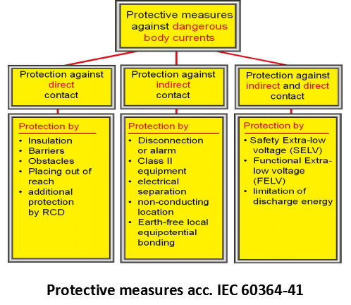
The overall aim of all these postulates lead to one and only one objective of ensuring uninterrupted supply of quality power at various areas of a hospital.
The challenges in achieving this objective are many folded. Some of the challenges with respect to the context of the Indian subcontinent are even unique. In India the major challenges are as follows:
“Time” or “Interval” based Maintenance Approach is not the best practice to ensure highest level of reliability of the Electrical Assets. They do not cater to the timely requirement of maintenance actions and hence the equipment’s are prone to sudden breakdown in spite of having a robust maintenance program in place.
The drivers for Condition Monitoring explains the various events, cause, time to action and the function are classified. It explains why and how Condition Monitoring can help in extending the life of assets and reduce the possibilities of unwanted breakdown.
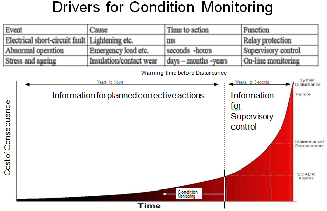
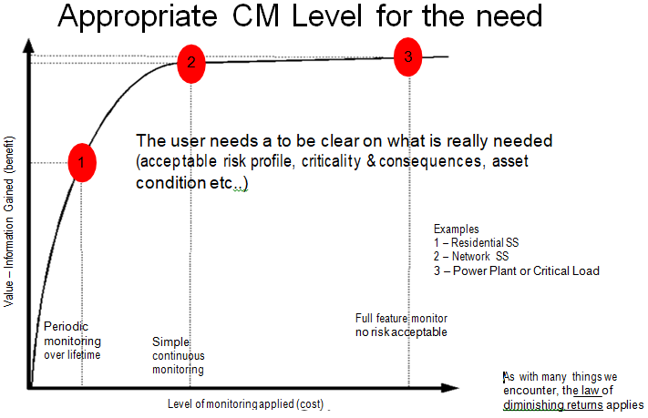
The benefits accrued from Condition Monitoring at various stages and the benefits compared with the investments are explained. Hence, it can be safely concluded that Condition Monitoring (preferably Real Time Condition Monitoring) of critical assets is an important activity and it can reduce the possibilities of a sudden breakdown.
Depending on the type of Electrical Asset there are different parameters that need to be monitored. For example, Generator Transformers are one of the most critical assets in the plants and for them the organization need to monitor at least the following parameters preferably on a real-time basis :
However, the root cause of most of the failures can be attributed to insulation deterioration over a period of time and it is also proven statistically that Partial Discharge (a measure of the insulation) is a major root cause of HV Electrical Asset failures.
Thus, for all critical Electrical Assets the utilities are undertake a comprehensive approach to carry out On Line Partial Discharge Monitoring Testing for assets like GIS, Generator & Power Transformers, HV Motors, HV Switchgears and Cables. This can yield the following benefits:
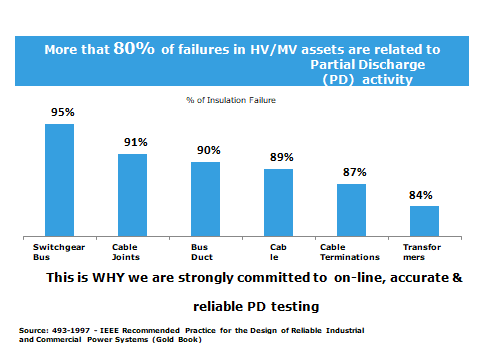
Objective is to help customer to eeliminate or reduce catastrophic equipment failures through RTCBM. The Online Partial Discharge Monitoring of Transformers are divided into following levels:
Level – I : In this level a suitable hand-held device with a built-in TeV and Acoustic Sensor need to be chosen to capture Partial Discharge activity inside transformer cable termination box.
The device is capable of providing PD values with traffic light indication to assess the criticality of the amplitude along with waveform view in the device HMI as well as the associated software.
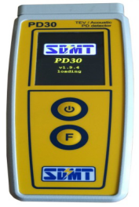
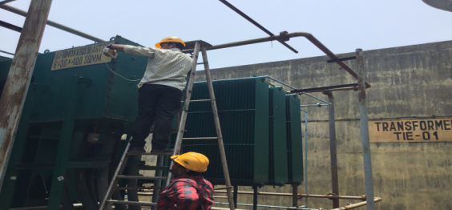
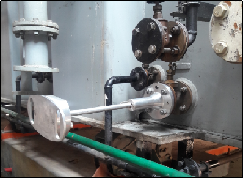
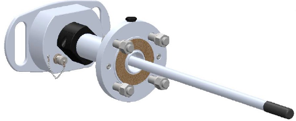
Level – II : The level 2 test is carried out using UHF based Drain Valve Sensors.
The purpose is to detect UHF partial discharge (PD) within the transformer tank. Any PD signal inside the transformer tank may not be able to be detected externally. The UHF sensor to be fitted internally to the tank without the need to drain the oil out.
Level – III : This level is performed based on the result obtained from level 1 & level 2. Thus, the suspected transformer is further tested for Location Identification of Partial Discharge inside the transformer using 4 Acoustic Sensors and a HFCT sensor based technique.
The purpose of this test is to detect the location identification of partial discharge inside the transformer.
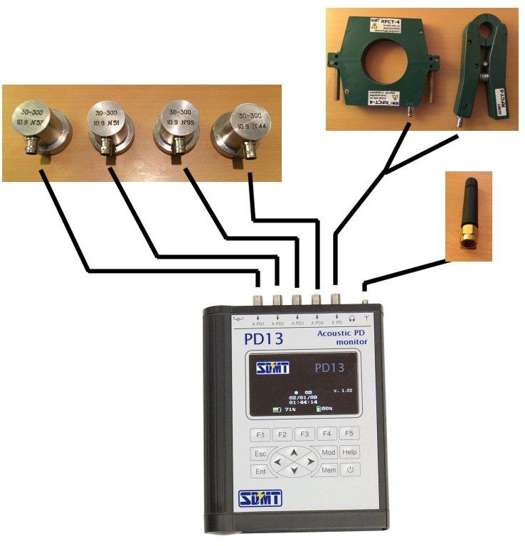
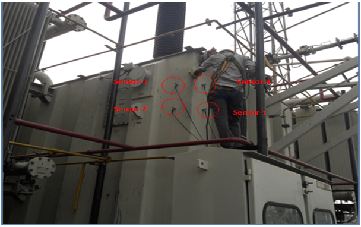
Objective is to help customer to Eliminate or reduce catastrophic equipment failures through RTCBM. The Online Partial Discharge Monitoring of Cables are divided into following levels :
Level – I : Detection of presence of partial discharge in the cable. In this level of testing a quick and effective survey of the total number of cables. This activity needs to be performed using EMI based Prycam Portable in basic mode (Red/Yellow/Green colour code).
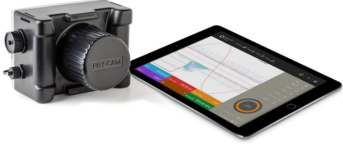
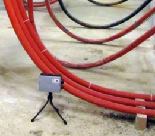
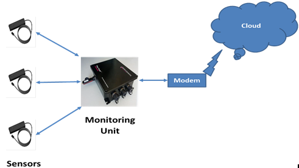
Level – II : The test is performed on cables identified with Red/Yellow colour shall be further probed in to find the criticality of partial discharge .
Level – III : Once the suspected cables are identified, Navitus team shall subject each of the suspected cables to a long term monitoring for at least 72 hours and analyze the profile of the Partial Discharge emissions. Necessary equipment (Prysmian make Pry-CAM Grid) shall be deployed on each cable for the entire duration.
Level – IV : Once the long term monitoring reconfirms the Partial Discharge emissions and also shows an increasing trend then Navitus team shall deploy necessary equipment (DIAEL make Blue Box Technology) at both ends of the cable to identify the location of the cable.
Objective is to help customer to Eliminate or reduce catastrophic equipment failures through RTCBM. The Online Partial Discharge Monitoring of Switchgear Panels are divided into following levels :
Level – I : In this level a suitable hand-held device with a built-in TeV and Acoustic Sensor need to be chosen to carry out PD measurement activities inside Switchgear Panel.
The device is capable of providing PD values with traffic light indication to assess the criticality of the discharge along with waveform view in the device HMI as well as the associated software.
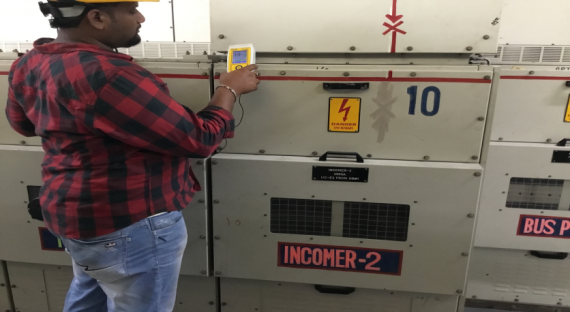
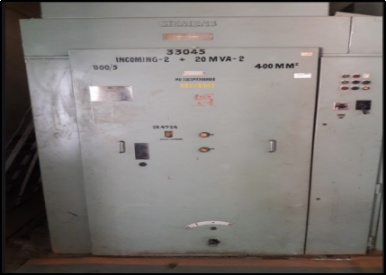
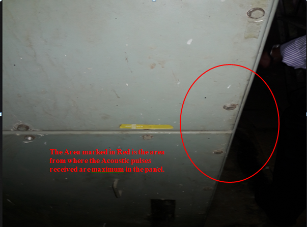
Level – II : This level is performed based on the result obtained from level 1. Thus, the suspected Switchgear Panel is further tested for Location Identification of Partial Discharge inside the Panel using 4 Acoustic Sensors and a HFCT sensor based technique.
The test is carried out using 4 Acoustic Sensors and a HFCT sensor.
The purpose is to detect the partial discharge location identification inside the Switchgear Panels.
Objective is to help customer to Eliminate or reduce catastrophic equipment failures through RTCBM. The Online Portable Partial Discharge Monitoring Device for GIS are described below :
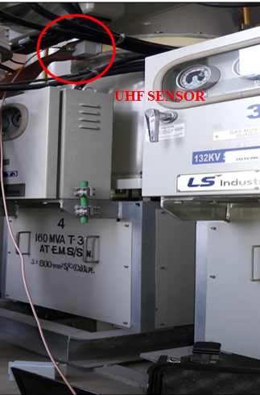
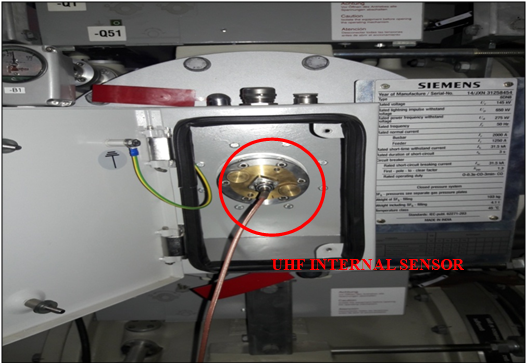
Level – I : An on-line Portable Partial Discharge Monitoring (PDM) system for GIS shall be multi-channel to provide an automatic facility for the simultaneous collection of PD data at multiple points on the GIS & its associated GI ducts and Voltage Transformers adopting UHF technique. The data stored shall provide a historical record of the progress of PD sources and shall identify the areas of maximum activity.
Level – II : Once the suspected areas of maximum PD activities are identified, Navitus team shall subject each of the suspected PD activity by the on line system, further investigation has to be carried out for the PD defect identification and location.
The highly advanced timing system in the device allows the location of the PD to be calculated within the GIS. The PD71 system can provide automated simple results, or advances screens for experts showing the pulse timing sequences between channels. The inherent accuracy is within 0.5m for the PD71.
The software can provide the following features for PD analysis.
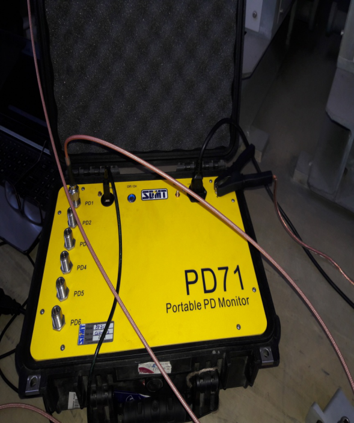
Objective is to help customer to Eliminate or reduce catastrophic equipment failures through Off-line Condition Monitoring.
Fault Passage Indicators (FPIs) are used by Electricity Distribution Utilities around the world. This is the most suitable cost-effective solution to locate faulty network sections. FPIs are key in reducing the outage time, in essence they do not reduce the number of outages but only their impact on the network. They will save the costly halve-and-recloses which :
When performing several halve and reclose cycles, the weak isolation points in the network are stressed and after a while can lead to an additional isolation fault, creating a very difficult fault location case to the linemen.
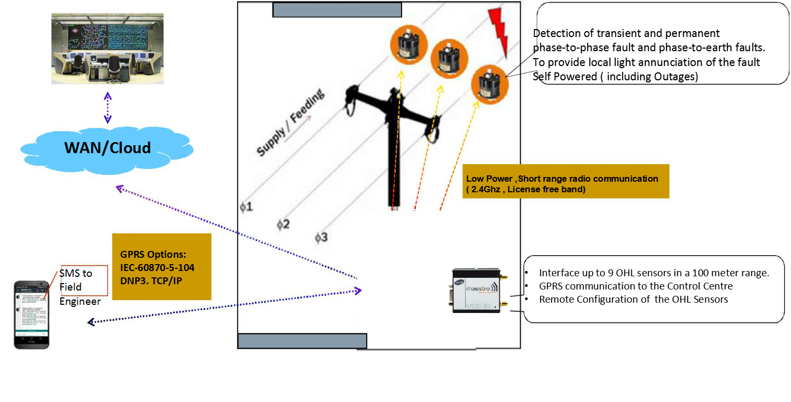